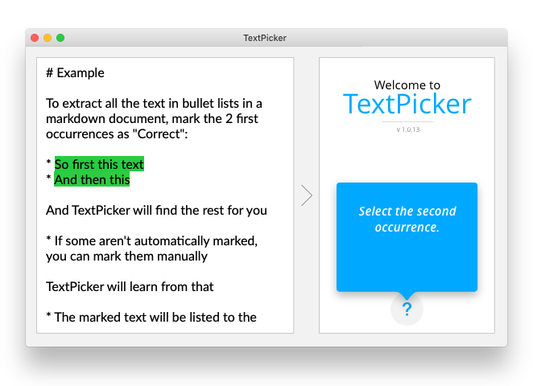
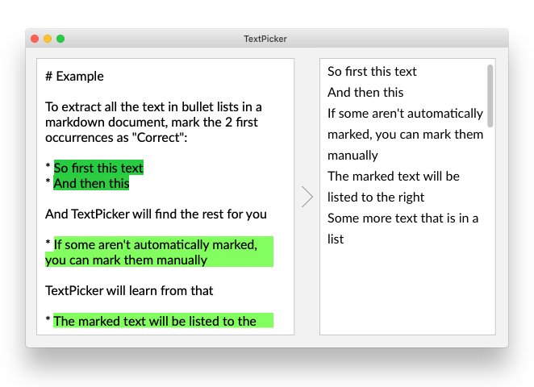

You
handpick the first two
TextPicker
finds the rest
Want to hear about it when it is released?
Automate
Use as a stand-alone Mac application, from the command line, in an Automator workflow, as a macOS service or a web API.
Develop
You will never have to use regular expressions again!
Export a code snippet to use in your own Swift code.
Export
Extract different types of data from the same text, and export as JSON, XML, CSV, spreadsheet or your own custom format.